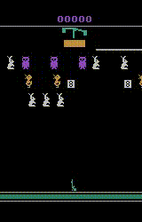
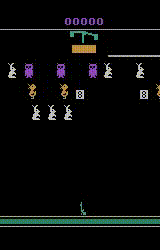

To compensate for the optimal Q-value estimation error and thus search out better policies,
we propose a provably efficient and parallelizable planning algorithm
and derive the condition under which the search-based optimal Q-values have a lower upper-bound of error than TD learning-based optimal Q-values.
The planning helps optimal inference during evaluation and sample-efficient transfer to novel games.
We first model the process of finding optimal actions within the imagined Markov Decision Process as a tree search problem,
and then extend beam search as the practical and parallelizable planning algorithm.
When both the beam width K and horizon H equal to 2, the process of planning is shown in the right figure:
TL;DR: A single JOWA-150M agent masters 15 Atari games at 84.7% human-level
and 119.5% DQN-level, and can adapt to novel games with ~4 expert demos.

 



*Training used 84x84 grayscale images. RGB demos shown here for better visualization. For Atlantis, only the first 7 minutes of the 2-hour gameplay are displayed.